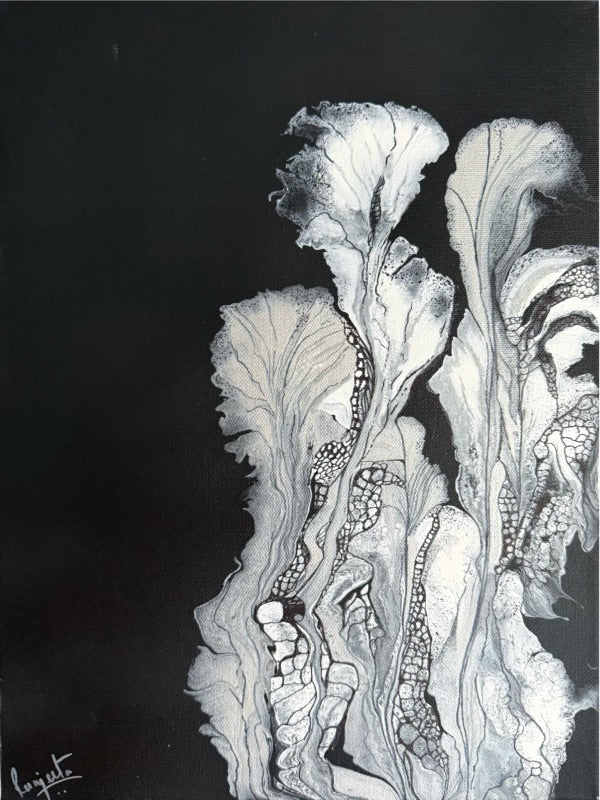

No. 01 · 2026
Devi
Blue House Too Gallery, Allen, Texas
Group exhibition
Shown: Devi – The Divine Feminine, Emergence
Exhibiting since 2019, in Texas and internationally.
A record of where Ranjeeta’s paintings have been shown and recognised.

Black & White, International Juried Exhibition
One of 64 artists selected from 872 proposals across 25 countries.
IAVA 2020, A HELP · International virtual selection
Le Gateau Gallery, France
Virtual solo exhibition
Blue House Too Gallery, Allen, Texas
Group exhibition
Shown: Devi – The Divine Feminine, Emergence
Frisco, Texas · Group exhibition
theGallery8680, Frisco, Texas · Group exhibition
Lincoln Center, Dallas, Texas
Group exhibition
Shown:
VAGF, Sweetwaters, Frisco, Texas
Shown: Yin and Yang – The Dark Side
VALA 2024 · Cotton Mills, McKinney, Texas
Shown: Blooming in Blues, The Spring Delight
Plano Art Center
Shown: Buddha – The awakened one
Blue House Too Gallery, Allen, Texas
Shown: Adiyogi – The first Yogi
Exhibitions and selections since 2019. More of the record is being added.
Galleries and curators are welcome to get in touch about exhibiting Ranjeeta’s work.
Exhibiting since 2019, in Texas and internationally.
{{ placesLine }}
Black & White, International Juried Exhibition
One of 64 artists selected from 872 proposals across 25 countries.
IAVA 2020, A HELP · International virtual selection
Le Gateau Gallery, France
Virtual solo exhibition
{{ e.place }}
Shown:
Galleries and curators are welcome to get in touch about exhibiting Ranjeeta’s work.
Write to Ranjeeta →